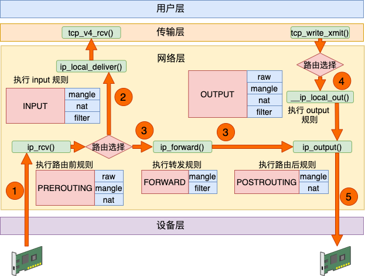

1. 什么是负载均衡？
一种充当反向代理的设备，将网络或应用流量分配与多个服务器，以提高并发能力和可用性。
工作层：
- 3层：根据IP分发请求，比如等价路由（ECMP）
- 4层：根据TCP、UDP分发请求，比如LVS
- 7层：根据HTTP、HTTPS分发请求，比如Nginx
解决场景：
- 负载分担：分担业务压力，通过某种算法将负载分发到各个服务器上。
- 安全：客户不知道真实的服务器。
- 故障隔离：某个服务器出现故障时，无人工干预的情况下自动被隔离。
- 高可用：后端服务器在故障、升级、重启的情况下，能不间断为客户提供服务。
- 其他：访问控制、流量监控等
2. kubernetes中的负载均衡
2.1. kubernetes service
service 是一组具有相同 label pod 集合的抽象，集群内外的各个服务可以通过 service 进行互相通信。service 只是将多个 pod 进行关联，实际的路由转发需要依赖其他组件来实现。
提供能力的组件：
- kube-proxy（iptables、ipvs）
- cilium（ebpf）
- metallb（提供LoadBalancer Service能力）
2.1.1. service 类型
- ClusterIP
- NodePort
- LoadBalancer
- ExternelName
- Headless
apiVersion: v1
kind: Service
metadata:
name: my-service
namespace: prod
spec:
type: ExternalName
externalName: nginx.default.svc.cluster.local
# 当查找主机 my-service.prod.svc.cluster.local 时，集群DNS服务返回 CNAME 记录，其值为 nginx.default.svc.cluster.local
# ExternalName 这种 service 类型的作用类似软链接或者快捷方式。
# client -> my svc -> nginx svc -> nginx pod
2.2. kubernetes ingress
3. service原理
- endpoints controller 是负责生成和维护所有 endpoints 对象的控制器，监听 service 和对应 pod 的变化，更新对应 service 的 endpoints 对象。当用户创建 service 后 endpoints controller 会监听 pod 的状态，当 pod 处于 running 且准备就绪时，endpoints controller 会将 pod ip 记录到 endpoints 对象中，因此，service 的容器发现是通过 endpoints 来实现的。
- kube-proxy 会监听 service 和 endpoints 的更新并调用其代理模块在主机上刷新路由转发规则。

另外，可以在集群中部署 CoreDNS 服务， 来达到集群内部的 pod 通过DNS 的方式进行集群内部各个服务之间的通讯。
所以，service
- 容器发现，是通过 endpoints 来实现；
- 服务发现，是通过 DNS 来实现；
- 负载均衡以及转发是通过kube-proxy（或其他替代组件）实现的；
4. kube-proxy实现
kube-proxy启动时根据ProxyMode参数来初始化对应的proxier实例，最终的刷新规则函数是借助BoundedFrequencyRunner来调用。
4.1. iptables



iptables有五链、五表。
- filter 表：accept、drop、reject；
- nat 表：dnat、snat；
- mangle 表：用于修改数据包的 IP 头信息；
- raw 表：iptables 是有状态的，其对数据包有链接追踪机制，连接追踪信息在 /proc/net/nf_conntrack 中可以看到记录，而 raw 是用来去除链接追踪机制的；
- security 表：最不常用的表，用在 SELinux 上；
kube-proxy中使用以下功能：
- 流量转发：DNAT 实现 IP 地址和端口的映射；
- 负载均衡：statistic 模块为每个后端设置权重；
- 会话保持：recent 模块设置会话保持时间；
syncProxyRules：为 service、clusterIP、externalIP、ingress、nodePort、endpoint 生成规则链，使用iptables-restore刷新规则。
4.2. ipvs
三种模式：
- DR
- NAT
- TUN
只有 NAT 模式可以进行端口映射。所以 kubernetes 中 ipvs 的实现使用了 NAT 模式，将 service[ip:port] 映射为 container[ip:port]。
linux 内核原生的 ipvs 模式只支持 DNAT，不支持 SNAT，所以还是需要依赖iptables。但无论有多少 pod/service，iptables 的规则数都是固定的。
syncProxyRules：生成ipvs规则、ipset列表，最后同步ipset，刷新iptables规则。
4.3. 区别
二者都是基于netfilter，
- iptables：底层数据结构为链表；只支持随机、轮询两种算法；工具为iptables
ipvs：底层数据结构为哈希表；支持多达8种算法；工具为ipvsadm
ipvs 还支持 realserver 运行状况检查、连接重试、端口映射、会话保持等功能。
5. cilium
cilium直接在lxc网卡挂载tc ingress程序[from-container]，针对访问service的流量，根据负载算法[random、maglev]选择backend。